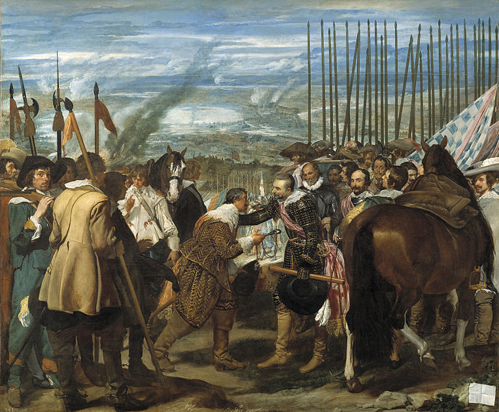

| 🎨 All About Baroque Painting | |||||
| 🏠 Home | 💭About | 📷 Gallery | 📽 Video | 🎧 Audio | 📞 Contact |
|
Baroque painting is the painting associated with the Baroque cultural movement. The movement is often identified with Absolutism, the Counter Reformation and Catholic Revival,but the existence of important Baroque art and architecture in non-absolutist and Protestant states throughout Western Europe underscores its widespread popularity.Baroque painting encompasses a great range of styles, as most important and major painting during the period beginning around 1600 and continuing throughout the 17th century, and into the early 18th century is identified today as Baroque painting. In its most typical manifestations, Baroque art is characterized by great drama, rich, deep colour, and intense light and dark shadows, but the classicism of French Baroque painters like Poussin and Dutch genre painters such as Vermeer are also covered by the term, at least in English.As opposed to Renaissance art, which usually showed the moment before an event took place, Baroque artists chose the most dramatic point, the moment when the action was occurring: Michelangelo, working in the High Renaissance, shows his David composed and still before he battles Goliath; Bernini's Baroque David is caught in the act of hurling the stone at the giant. Baroque art was meant to evoke emotion and passion instead of the calm rationality that had been prized during the Renaissance.Among the greatest painters of the Baroque period are Velázquez, Caravaggio,Rembrandt, Rubens,Poussin, and Vermeer. Caravaggio is an heir of the humanist painting of the High Renaissance. His realistic approach to the human figure, painted directly from life and dramatically spotlit against a dark background, shocked his contemporaries and opened a new chapter in the history of painting. Baroque painting often dramatizes scenes using chiaroscuro light effects; this can be seen in works by Rembrandt, Vermeer, Le Nain and La Tour. The Flemish painter Anthony van Dyck developed a graceful but imposing portrait style that was very influential, especially in England.The prosperity of 17th century Holland led to an enormous production of art by large numbers of painters who were mostly highly specialized and painted only genre scenes, landscapes, still lifes, portraits or history paintings. Technical standards were very high, and Dutch Golden Age painting established a new repertoire of subjects that was very influential until the arrival of Modernism.  ↑ top |
|||||
| design by MahrooShirkhodaie © 2022 | |||||